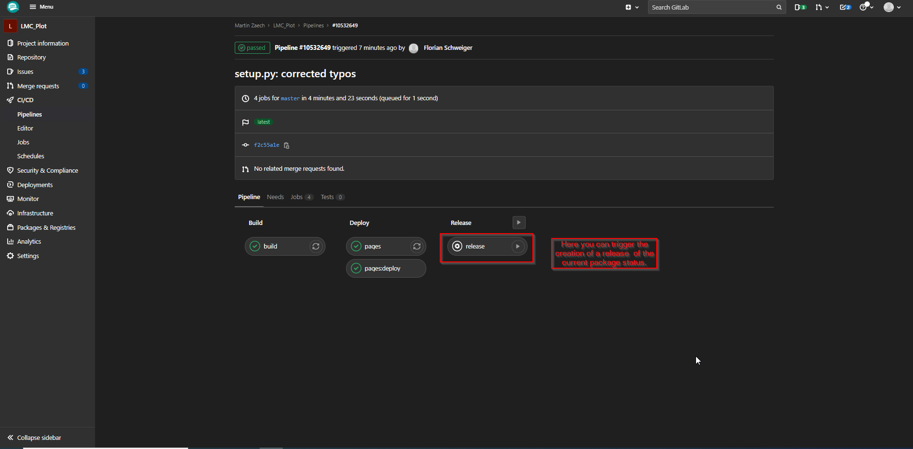
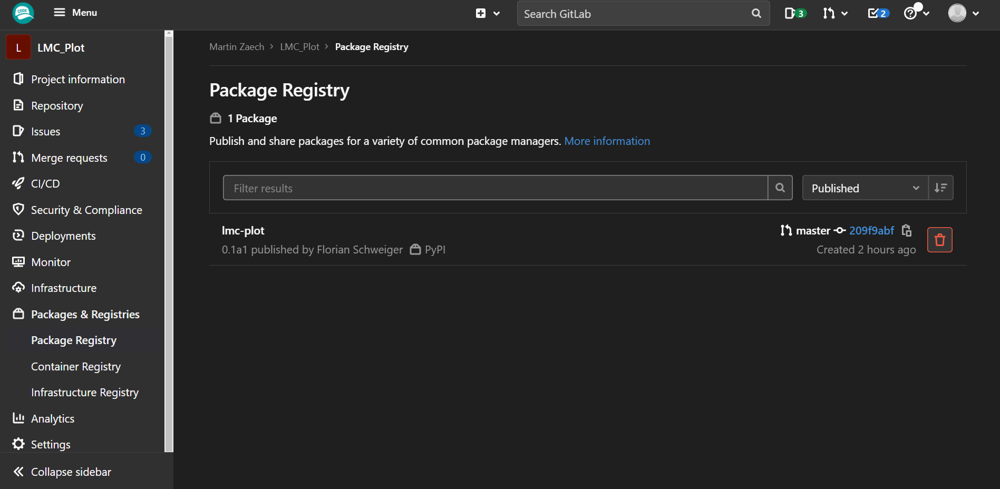
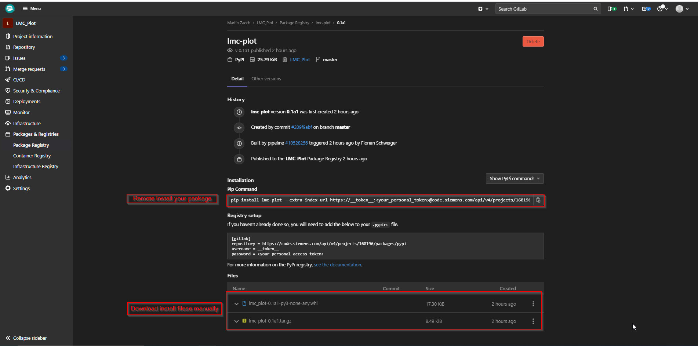
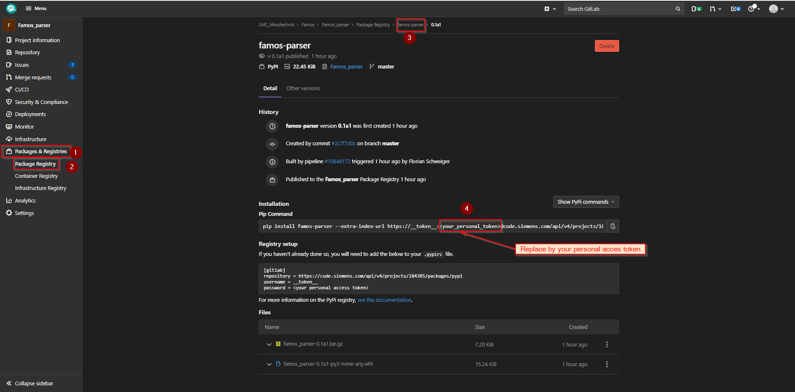
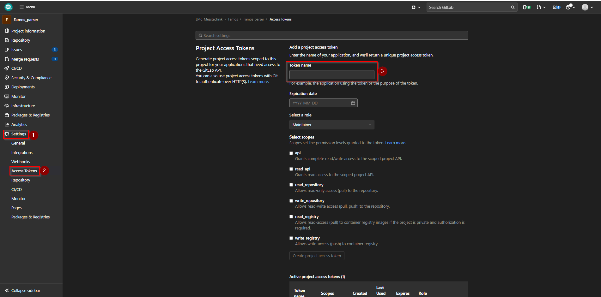

Guide: How to create and install a python package
Contents
Guide: How to create and install a python package#
This guide should explain how to make a Python project installable via pip. Later chapters also explained how to introduce a release pipeline into your GitLab CI/CD that allows you to publish a release manually. This is only a hands-on guide, so there will be no deep explanations. To really understand whats going on, please have a look at the official documentation.
Conventions for creating packages#
Die Version des Packages wird im “obersten” init.py gepflegt.
important notes for creating a package#
Die notwendigen python packages (requirements) müssen im requirements.txt des Repositories und der Liste der setup.py Datei für das Package gepflegt werden.
In den setup.py Datei sind nur die packages, die das selbst generierte Package benötigt.
Im requirements.txt des Repositories sind zusätzlich die Packages welche für die Erstellung der Dokumentation benötigt werden.
Die Gitlab-ci muss deshalb immer die requirements.txt Datei installieren. (ohne alle requirements läuft die Doku Erstellung nicht durch, es kommt aber kein genereller Pipeline Fehler)
setup.py file#
The setup.py file stores information about your package that is important for the pip-installer (requirements, python version,…) or gives general data (repo URL, release download website,…).
The recommended way to store those information is to do the following:
from setuptools import setup
VERSION = '0.1a1'
setup(
name='lmc_plot',
version=VERSION,
url='https://code.siemens.com/martin.zaech/lmc_plot',
download_url='https://code.siemens.com/martin.zaech/lmc_plot/-/packages',
license='Siemens Inner Source License v1.4',
author='Martin Zaech',
author_email='martin.zaech@siemens.com',
description='Python package to plot from DataFrames.',
long_description=__doc__,
packages=[ 'lmc_plot',"lmc_plot.bar_group_plot_calls","lmc_plot.correlation",
"lmc_plot.distribution","lmc_plot.evolution","lmc_plot.evolution.line_plot","lmc_plot.export_graphik",
"lmc_plot.iterate","lmc_plot.maps","lmc_plot.radprofil"],
zip_safe=False,
platforms='any',
install_requires=[
"folium",
"matplotlib",
"numpy",
"pandas",
"pathlib",
"plotly",
"seaborn",
"xlrd",
"openpyxl"
],
python_requires='>=3.6.0',
classifiers=[
'Intended Audience :: Developers',
'License :: OSI Approved :: Siemens Inner Source License',
'Natural Language :: English',
'Operating System :: OS Independent',
'Programming Language :: Python',
'Programming Language :: Python :: 3 :: Only',
'Programming Language :: Python :: 3.6',
'Programming Language :: Python :: 3.7',
'Programming Language :: Python :: 3.8',
'Programming Language :: Python :: 3.9',
'Topic :: Data Visualization',
]
)
Thereby the setup()-function takes several inputs to define above mentioned informations (possible Inputs). In this example, I listed some of the most important information you should use to give your package the minimum of information, so our users can understand the purpose and how to use your package. Its recommended defining (install_requires) which package versions you use (example: pip freeze > requirements.txt). This helps your audience to run your package quickly. Thereby you can also use logical arguments like: NumPy >= 1.18.5. Similar for python_requirements.
Also its important to add your sub-packages to the packages list arguement. So for example in my case lmc_plot.maps is the sub-package contained in the folder lmc_plot/maps. Note that a subpackage also requires a __init__.py file.
At this point, you can make your Python file installable by running the following command in the folder the setup.py-file is located:
python setup.py install
This creates a folder dist containing a .whl and a .tar.gz file, from which one can install your package.
The final setup.py file I use:
The Version number is automatically determined from the __version__-variable in the __init__.py file in your package source code folder. This version number is important since it identifies the status of your release. If you want to update a release you a have to delete the release with the same releasenumber in your GitLab registry. (best practice)
import io
import os
import re
from setuptools import setup
def read(path, encoding='utf-8'):
path = os.path.join(os.path.dirname(__file__), path)
with io.open(path, encoding=encoding) as fp:
return fp.read()
def version(path):
""" Obtain the package version from a python file e.g. pkg/__init__.py
See <https://packaging.python.org/en/latest/single_source_version.html>.
"""
version_file = read(path)
version_match = re.search(r"""^__version__ = ['"]([^'"]*)['"]""",
version_file, re.M)
if version_match:
return version_match.group(1)
raise RuntimeError("Unable to find version string.")
VERSION = version('lmc_plot/__init__.py')
setup(
name='lmc_plot',
version=VERSION,
url='https://code.siemens.com/martin.zaech/lmc_plot',
download_url='https://code.siemens.com/martin.zaech/lmc_plot/-/packages',
license='Siemens Inner Source License v1.4',
author='Martin Zaech',
author_email='martin.zaech@siemens.com',
description='Python package to plot from DataFrames.',
long_description=__doc__,
packages=['lmc_plot',"lmc_plot.bar_group_plot_calls","lmc_plot.correlation",
"lmc_plot.distribution","lmc_plot.evolution","lmc_plot.evolution.line_plot","lmc_plot.export_graphik",
"lmc_plot.iterate","lmc_plot.maps","lmc_plot.radprofil"],
zip_safe=False,
platforms='any',
install_requires=[
"folium",
"plotly",
"seaborn",
"matplotlib",
"pandas",
"numpy",
"xlrd",
"openpyxl"
],
python_requires='>=3.6.0',
classifiers=[
'Intended Audience :: Developers',
'License :: OSI Approved :: Siemens Inner Source License',
'Natural Language :: English',
'Operating System :: OS Independent',
'Programming Language :: Python',
'Programming Language :: Python :: 3 :: Only',
'Programming Language :: Python :: 3.6',
'Programming Language :: Python :: 3.7',
'Programming Language :: Python :: 3.8',
'Programming Language :: Python :: 3.9',
'Topic :: Data Visualization',
]
)
Release-Pipline on GitLab#
This section explains how to create a manual pipeline that allows creating a release.
Define your .gitlab-ci.yml-file#
First of all we have to define the .gitlab-ci.yml to monitor our GitLab Pipelines. Those Pipelines are used for different tasks, like autogenerating the documentation, running tests, or creating a release. Later we want to take in this section.
To create a release manually when you package has reached a point that is worth to creat a new release from it you can add the following to your .gitlab-ci.yml-file:
release:
stage: release
script:
# release PyPI package
- pip --proxy="$CODE_PROXY" install twine
- python setup.py sdist bdist_wheel
- twine upload -u ${CI_REGISTRY_USER} -p ${CI_JOB_TOKEN} --repository-url ${REGISTRY_URL} dist/*
only:
- master
tags:
- DOCKER
when: manual
The included script will create a new .whl file from your package and upload it to your registry folder for the project on GitLab. The only: - master phrase tells that it will only be executable if something was published on the master branch. The when: manual statement is responsible for the stage is only executed if one triggered it manually. In this picture, you can see how it looks like:

When you trigger this release stage, and it has finished processing, you can find your release files under Packages & Registries/Package Registry:

And after choosing a release version:

One example for a complete .gitlab-ci.yml-file:
image: python:3.9.2
variables:
CACHE_DIR: ${CI_PROJECT_DIR}/.cache
REGISTRY_URL: ${CI_API_V4_URL}/projects/${CI_PROJECT_ID}/packages/pypi
before_script:
# display Python version
- python -V
# set proxy
- export HTTPS_PROXY="$CODE_PROXY"
- export HTTP_PROXY="$CODE_PROXY"
- export NO_PROXY="127.0.0.1,localhost,.siemens.de,.siemens.net,.siemens.com,.siemens.io"
- export http_proxy="$CODE_PROXY"
- export https_proxy="$CODE_PROXY"
- export no_proxy="127.0.0.1,localhost,.siemens.de,.siemens.net,.siemens.com,.siemens.io"
stages:
- build
- deploy
- release
build:
stage: build
script:
# build Sphinx documentation for any branch and store it in folder site
- pip --proxy="$CODE_PROXY" install -r requirements.txt
- python setup.py sdist bdist_wheel # build Python souce distribution and wheel
- sphinx-build -b html ./docs site
artifacts:
paths:
- site/
- dist/*.whl
- dist/*.tar.gz
expire_in: 1 day
tags:
- DOCKER
pages:
# publish Sphinx documentation created in build stage
# --> do this only for the master branch
# To publish the documentaion the files are just copied from folder sites to folder public
stage: deploy
script:
- python setup.py install # installs the lmc_plot package
- mv site public/
dependencies:
- build
artifacts:
paths:
- public
only:
- master
tags:
- DOCKER
release:
stage: release
script:
# release PyPI package
- pip --proxy="$CODE_PROXY" install twine
- python setup.py sdist bdist_wheel
- twine upload -u ${CI_REGISTRY_USER} -p ${CI_JOB_TOKEN} --repository-url ${REGISTRY_URL} dist/*
only:
- master
tags:
- DOCKER
when: manual
Remote installation from Registry#
Documentation of
The most simple way to install a release is remotely over the link provided on the website of the chosen releas in the registry:
$ pip install lmc-plot --extra-index-url https://__token__:<your_personal_token>@code.siemens.com/api/v4/projects/168196/packages/pypi/simple
...
Installing collected packages: lmc-plot
Successfully installed lmc-plot-0.1a1
Thereby you have to replace <your_personal_token> by one of your personal access tockens.
The personal access Token is a cryptic string see code_siemens\Access_Tokens

Warning for the following was not tested successfully yet. But the usage of package access tokens should work out as follows.
You can also use access tokens from the package itself. This has the advantage that you can include a package install in a GitLab Ci without using personal access token. You can create package access tokens as follows:

In the .pypirc-file you can define your access tokens to the remote releases. More information you can be find here: .pypirc file
Could look like:
[distutils]
index-servers =
artifactory
gitlab
[artifactory]
repository = https://captain.rtf.siemens.net/artifactory/api/pypi/{repository}
username = {username}
password = {password hash}
[gitlab]
repository = https://code.siemens.com/api/v4/projects/149700/packages/pypi
username = __token__
password = {personal access token}
Install from GitLab Registry#
Alternativly you can install it via the .whl file:
$ pip install PATH\TO\FILE\FILENAME.whl
...
Installing collected packages: lmc-plot
Successfully installed lmc-plot-0.1a1
Like any regular Python package.
install packages hosted in GitLab over the requirements.txt#
To install a package hosted in GitLab in an environment, the use of requirements.txt is not possible.
Accordingly, to give the dependency of package_B to package A hosted in GitLab is not possible. To use package_B, Package_A has to be installed by the user before.
A solution to this situation may be provided by python-poetry